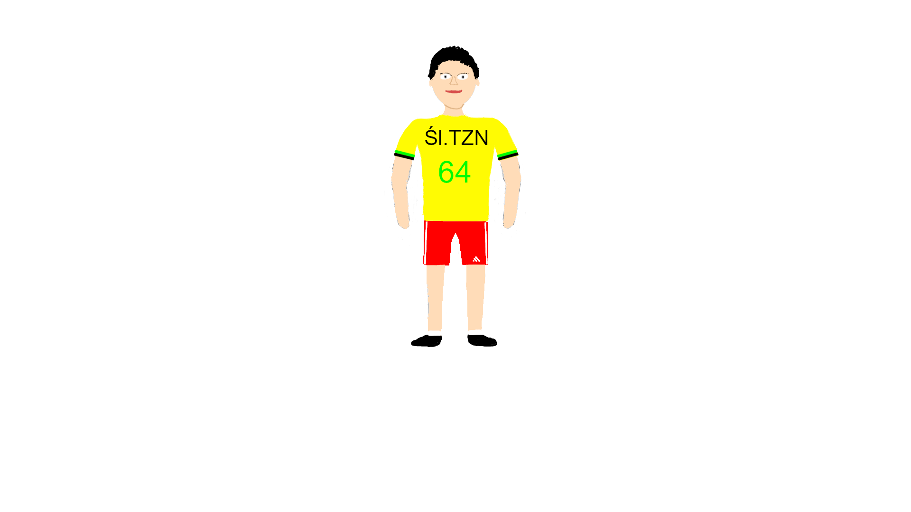

Strój szkolny powinien być schludny, wygodny oraz odpowiedni do miejsca nauki. Poniżej znajdują się grafiki przedstawiające ucznia oraz nauczyciela.
Uczeń

Witamy na stronie poświęconej strojowi ucznia i nauczyciela.
Strój szkolny powinien być schludny, wygodny oraz odpowiedni do miejsca nauki. Poniżej znajdują się grafiki przedstawiające ucznia oraz nauczyciela.
